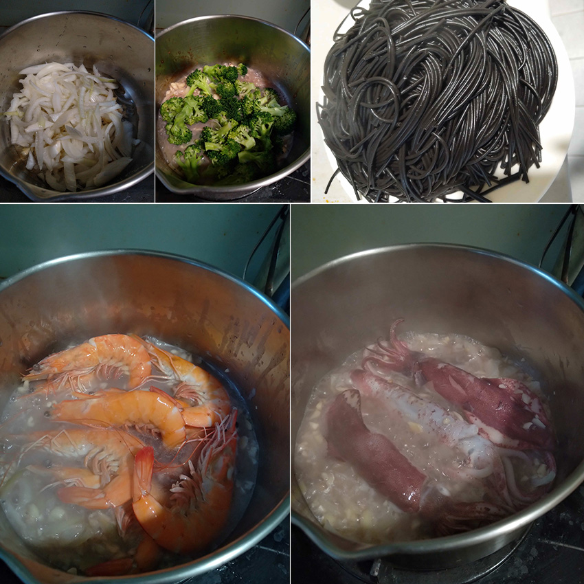

空中瑜珈一直是我想嘗試的運動之一，覺得在半空中展現的姿態是美麗且充滿力量感。空中瑜珈非常需要核心、背部和手臂肌肉的控制力來在空中呈現每個動作。畢竟是瑜珈，身體的柔軟度也是很重要的，我也是柔軟度不好派，空瑜可以幫助訓練柔軟度，透過掛布的輔助拉伸肌肉，我覺得比地板的變化性高，能拉伸的角度更多。自從開始上空瑜課後，我也會在其他時間做做伸展，發現除了柔軟度變好之外體態也會變好！
 |
首先課程從伸展與熱身動作開始，透過掛布的輔助，身體能更自然地延展。接著進入到比較進階的動作時，像是懸空扭轉、以及需要核心出力的平衡姿勢，雖然一開始有點吃力，但隨著慢慢掌握重心與呼吸的節奏，身體也會漸漸進入狀況。因為每個動作都需要專注、穩定的核心與呼吸的配合，所以可以更專注於當下。
接著老師會示範這一堂課要教學的動作，一步一步的講解通常會拆解成一個動作一個口令，讓我們能夠盡量記住所有動作，這很重要是因為當你在半空中忘記動作的時候就會卡在上面，這是非常消耗體力的，要一次把串連做完也是需要不斷的練習。
|  |
還記得第一堂課老師教我們倒立，要坐在掛布上並且後倒往下，當時覺得很恐怖和害怕自己掉下來，我覺得吊在空中會激發生存本能？但其實只要保持穩定其實是很安全的。還有千萬不要逞強，覺得快要沒力的時候就趕快下來休息。
接觸空瑜也將近快一年，我自己最喜歡展布的課程，覺得展開的動作很美之外也多了很多的變化。
這一年中也學到了非常多基礎和微進階動作，從初學者到現在可以自己完成串連不用老師拯救我，還可以幫助同學，對我來說是非常有成就感的。
舉例一個基礎動作叫做截肢腿，它其實是一個暱稱，這個動作是進入串連很常見的動作，主要就是把掛布纏繞在大腿之後做後續的串連。這個動作我個人認為對初學者有點難度，因為纏在大腿上非常痛（所以才叫截肢腿），我第一次學這動作的時候大腿都會瘀青，但後來習慣了就比較可以忍耐，多做幾次之後大腿耐受力也會變強，就比較不容易瘀青。
空中瑜珈不僅是一種身體訓練，更是一種內在的探索。你看到的輕盈姿態跟流暢的動作，背後都是不斷的失敗與練習。當看到自己完成原本以為自己無法完成的動作，會更有自信心，同時也讓我更勇於嘗試和挑戰更進階的動作。
看著自己一次次進步、一次次更穩定、完成更高難度的動作，非常的有成就感。在空中做串連的時候，我會非常專注在當下自己的四肢平衡（為了不要讓自己摔下去）也減輕了我的壓力、情緒上更穩定。有什麼不開心去飛一下就對了！當然，空中的世界不僅只有空瑜還有空中環、舞綢等等的進階運動，之後會想再進一步探索！